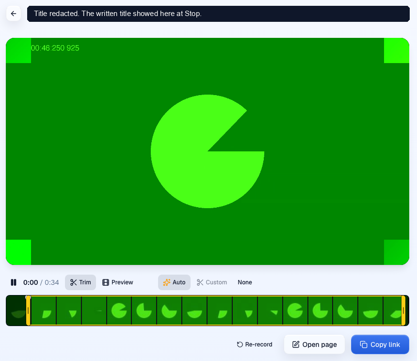
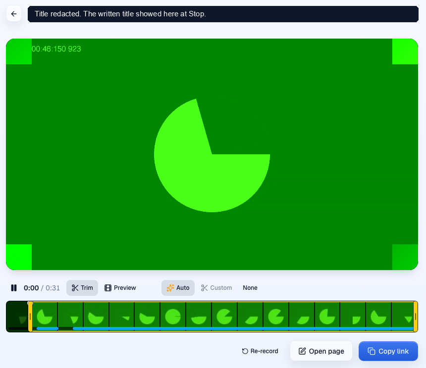

Live title at Stop, measured on the PR preview
At Stop, the finish screen now shows a title written from what the rep said. The median wait was about half a second when the rep stopped in a pause, and 1.4 seconds when they stopped mid-sentence.
Before and after
| Version | p50 | p90 |
|---|---|---|
| Before | ||
| main todayThe header says "Finish your video". The take stays "Untitled Video" until someone renames it. | no title | no title |
| PR #1397 pathMux Robots transcribes the asset, then a title job names it. Measured from Finish, 47 to 81 s over 12 takes. | about 58 s | not reported |
| After, PR #1423, Stop to title, 10 takes each | ||
| Stop 1.5 s into a pause | 544 ms | 1,473 ms |
| Stop 3 s into a pause | 438 ms | 834 ms |
| Stop while talking | 1,431 ms | 1,719 ms |
A p90 over 10 takes is rough. One slow take moves it a lot. Every one of the 30 timed takes got a title.
Stop to title, every take
One dot per take. The dark line is the median. The shaded band is what the design guessed for that case.
Every take, in ms
| Case | Takes, sorted | min | p50 | p90 | max |
|---|
What the finish screen shows
Screenshots from the harness at 1280 by 800, cropped to the main column. A solid box covers the title text, because the title came from a real production take. The video is the fake camera's green test pattern.


Design against measurement
The design guessed 0.15 to 0.3 s for a Stop in a pause. The build missed that. The measured median was 0.54 s at 1.5 s into a pause and 0.44 s at 3 s.
The seal request at Stop still makes two database round trips before it answers. The fastest seal across all 30 takes took 276 ms. In the paused cases the seal starts a median 34 ms after Stop and the title paints 10 to 11 ms after it returns, so even the fastest seal lands past 0.3 s. The database share of the seal is inferred from the code, not traced per take.
Three of the 20 paused takes took over a second. Their timestamps line up with slow calls to the title model. That match is inferred from timestamps, not traced.
The design said 1 to 1.5 s for a Stop while talking. The measured median was 1.43 s, inside that range. The p90 was 1.72 s, outside it.
The first run, at c6c678a1c before two latency fixes, had medians of 2,350, 1,160 and 3,184 ms for the same three cases over 6 takes each.
Method
Preview pr-1423.clarity-video.workers.dev serving head fa45249c9. Playwright with a fake microphone that plays one real production take. 10 takes per case, 30 in all. Stop to title runs from the Stop click to the title painted in the field. Percentiles use linear interpolation.